Design that
connects.
I’m Marco Sawiris, a Senior Graphic Designer specializing in branding, social media, motion graphics and commercially effective production-ready design.
Explore My Work.
Select a category to explore the full range of my design work.
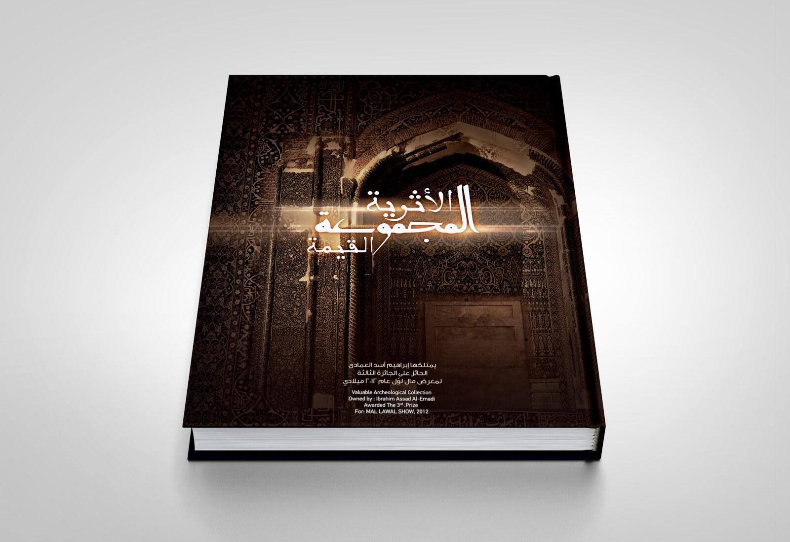
Valuable Archaeological Collection
Book Cover - Culture & Heritage
Concept & Design Approach
Concept: A heritage-led cover built around Islamic architectural detail, giving the publication a strong sense of history and cultural value.
Design Approach: Cinematic imagery, warm tonal treatment and focused Arabic typography create depth and a premium archival character.
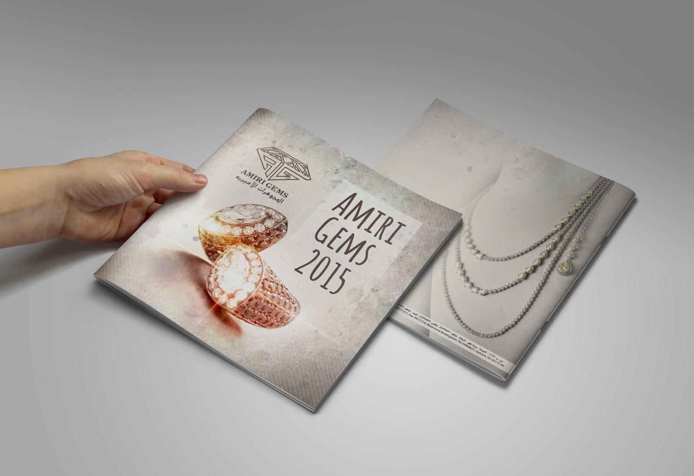
Amiri Gems
Catalog - Jewelry
Concept & Design Approach
Concept: A refined jewelry catalog direction that places the product at the center and communicates elegance, rarity and craftsmanship.
Design Approach: Premium product imagery, restrained composition and soft neutral tones support a luxurious visual hierarchy.
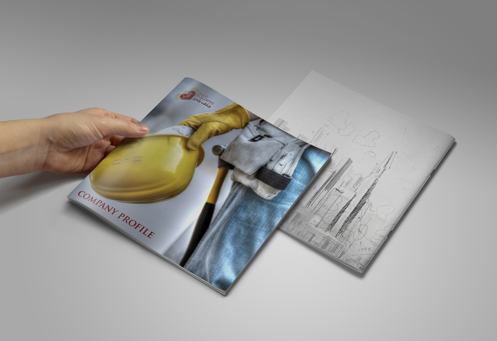
Gulf Builders
Company Profile - Construction
Concept & Design Approach
Concept: A corporate profile concept built around the human side of construction, balancing safety, expertise and professional credibility.
Design Approach: Realistic photography, clear hierarchy and industrial visual cues create a direct, dependable corporate presentation.
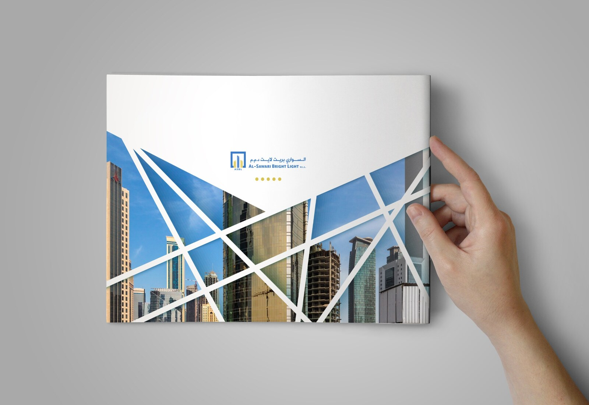
Al-Sawari Bright Light
Company Profile - Real Estate
Concept & Design Approach
Concept: A contemporary corporate cover using architecture as the main brand asset, communicating scale, development and modern urban growth.
Design Approach: Geometric white lines, architectural photography and generous negative space give the profile a structured modern identity.
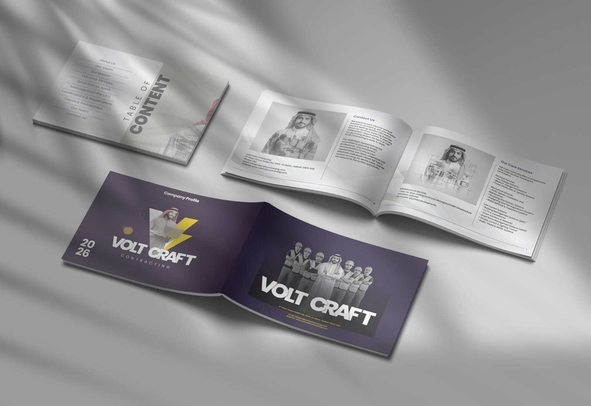
Volt Craft Contracting
Company Profile - Contracting
Concept & Design Approach
Concept: A bold corporate publication that presents the contractor as modern, capable and people-driven, with a strong visual identity.
Design Approach: High-contrast branding, monochrome team imagery and modular editorial layouts create a confident contemporary system.
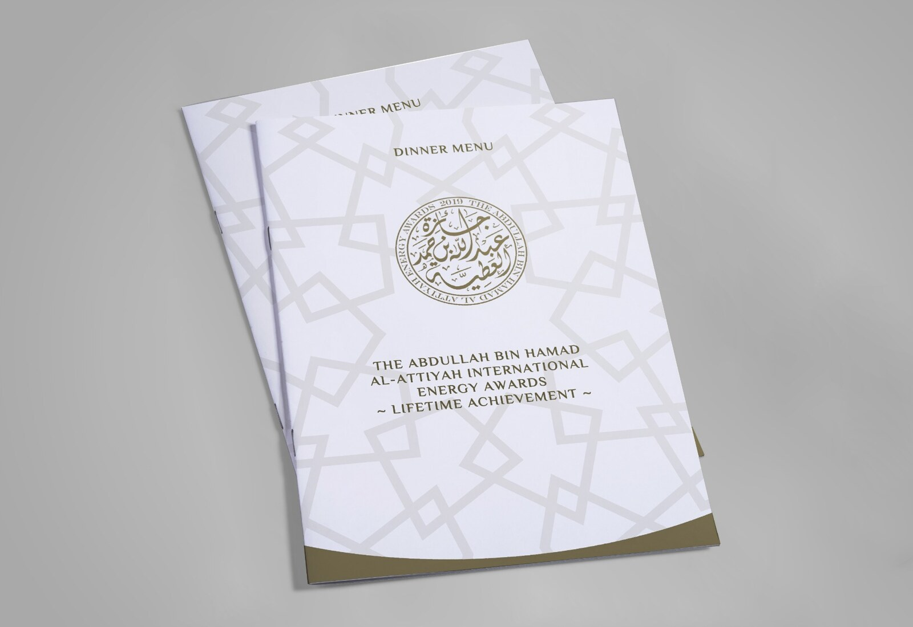
Energy Awards Dinner Menu
Event Collateral - Energy
Concept & Design Approach
Concept: An elegant event menu designed to reflect the prestige of an international energy awards ceremony without visual excess.
Design Approach: Subtle geometric patterning, centered typography and restrained metallic tones establish a formal premium character.
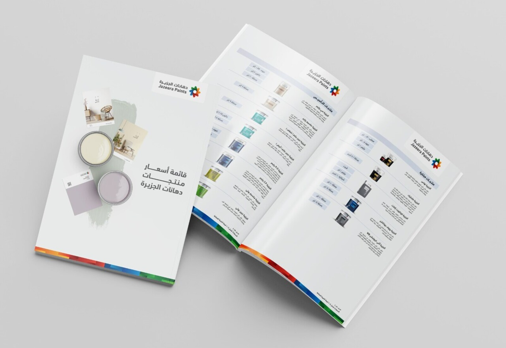
Jazeera Paints Price List
Product Catalog - Paints
Concept & Design Approach
Concept: A functional product publication that organizes a broad paint range into an accessible, branded reference for customers and sales teams.
Design Approach: Clean grids, product-led pages and controlled brand accents improve navigation while keeping the catalog visually light.
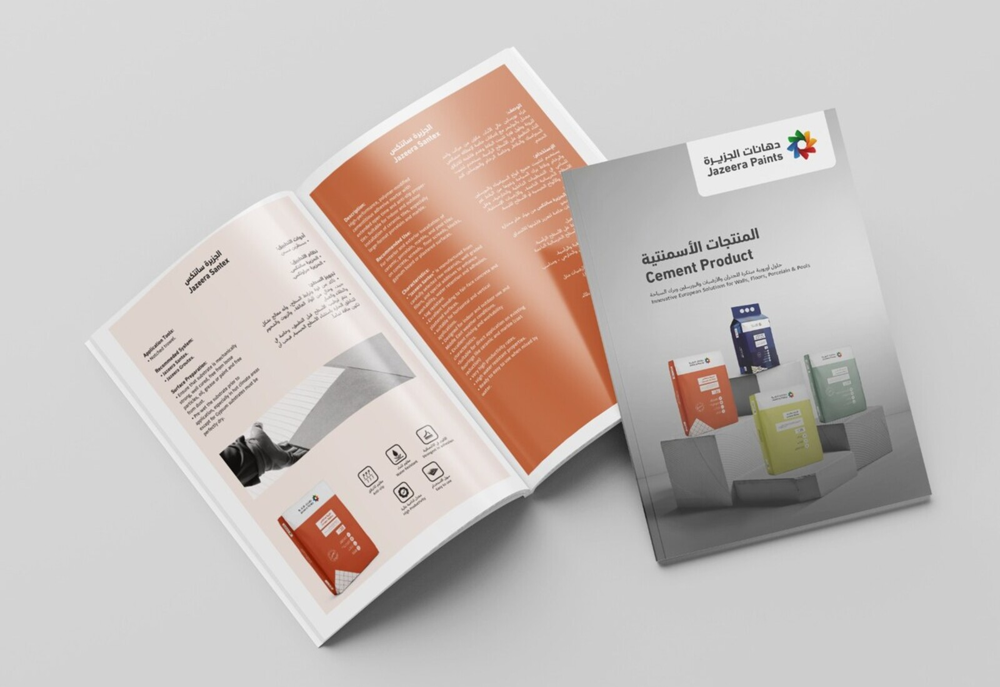
Jazeera Cement Products
Product Catalog - Construction
Concept & Design Approach
Concept: A technical catalog direction that makes industrial products feel organized, contemporary and commercially presentable.
Design Approach: Neutral architectural styling, structured information blocks and product renders create a precise professional hierarchy.
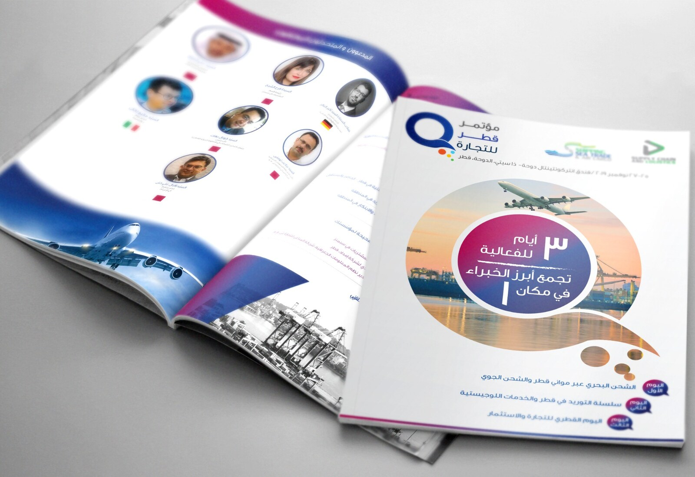
Qatar Trade Conference
Magazine - Event Publication
Concept & Design Approach
Concept: A dynamic conference publication that connects trade, logistics and expert content within one energetic editorial language.
Design Approach: Circular image framing, strong blue-magenta accents and clear content hierarchy create movement and event visibility.
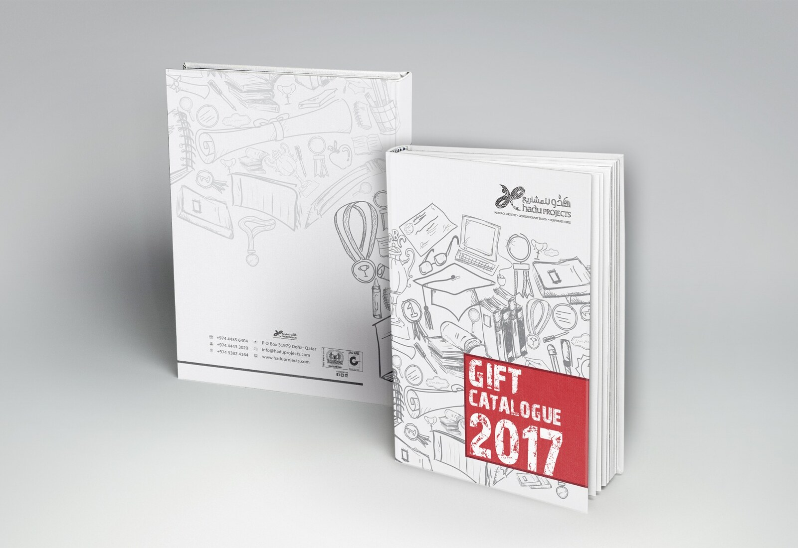
Hadu Projects
Gift Catalog - Creative Industries
Concept & Design Approach
Concept: A playful catalog identity that presents creative merchandise through a hand-drawn visual language with an approachable personality.
Design Approach: Monochrome doodle illustration with a bold red focal block gives the cover contrast, memorability and youthful energy.
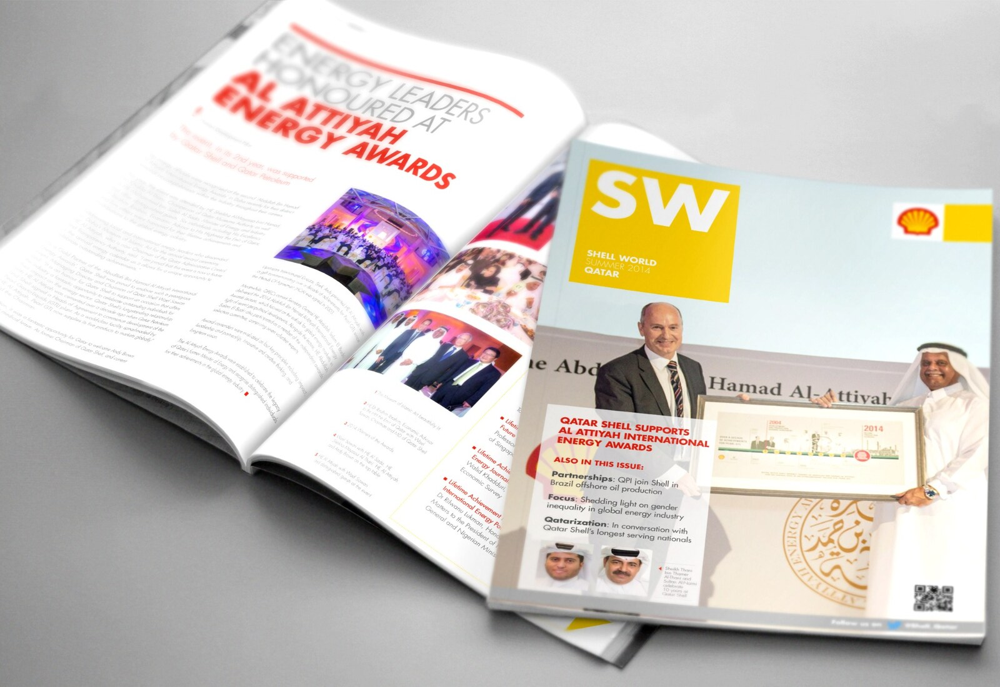
Shell World Qatar
Corporate Magazine - Energy
Concept & Design Approach
Concept: A corporate magazine system that balances global brand consistency with local editorial storytelling and event coverage.
Design Approach: Strong Shell brand colors, modular article layouts and documentary imagery support fast reading and brand recognition.
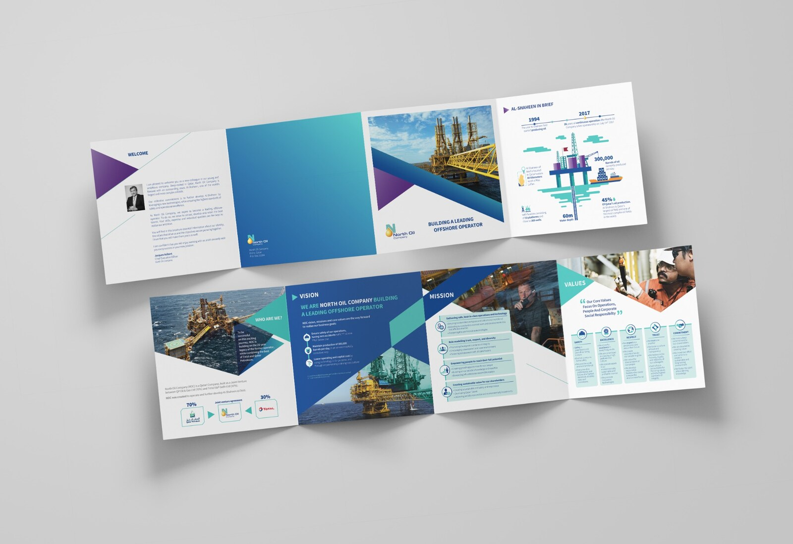
North Oil Company
Corporate Brochure - Energy
Concept & Design Approach
Concept: An information-led corporate brochure that translates complex operational content into a clear and credible visual story.
Design Approach: Geometric brand shapes, infographics, photography and disciplined grids make technical information easier to scan.
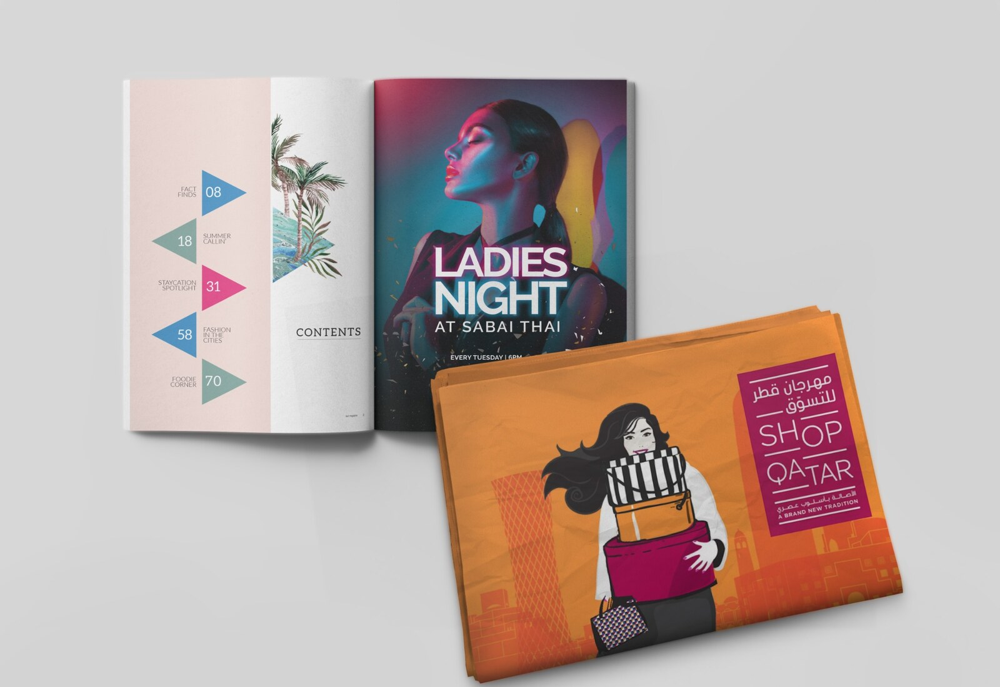
Shop Qatar
Magazine - Retail & Lifestyle
Concept & Design Approach
Concept: A lively editorial direction built around shopping, fashion and city experiences, designed to feel energetic and contemporary.
Design Approach: Bold illustration, warm orange-magenta tones and expressive editorial imagery create a youthful retail atmosphere.
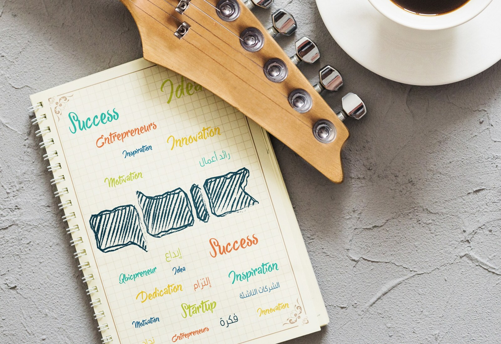
Idea Notebook
Notebook Cover - Entrepreneurship
Concept & Design Approach
Concept: A creative notebook concept centered on ideas, ambition and entrepreneurship, using informal visual language to encourage expression.
Design Approach: Handwritten typography, sketch-style graphics and varied accent colors create a personal, energetic and idea-driven feel.
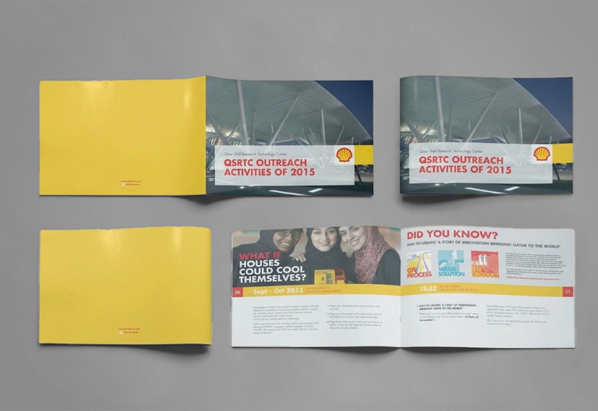
QSRTC Outreach
Outreach Publication - Energy
Concept & Design Approach
Concept: A compact outreach publication presenting technical activities in an accessible format while maintaining strong corporate recognition.
Design Approach: Shell yellow, structured spreads and technical photography deliver a clean branded editorial system with high visibility.
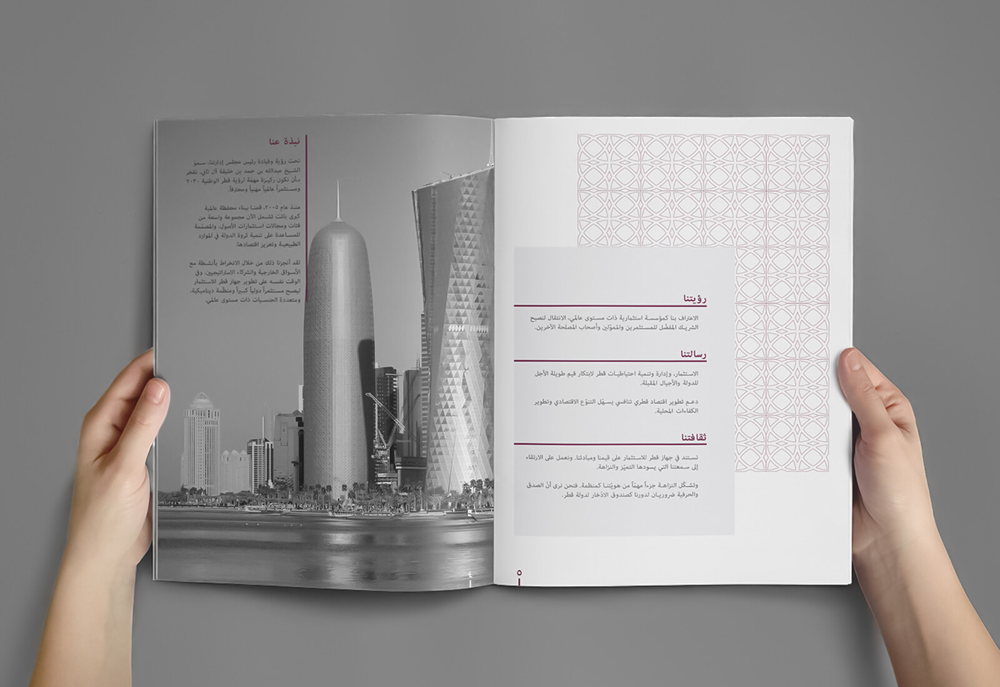
Corporate Profile - Qatar
Company Profile - Real Estate
Concept & Design Approach
Concept: A restrained corporate editorial concept combining Doha architecture with a formal information structure for a credible business presence.
Design Approach: Monochrome city photography, burgundy accents and geometric patterning create a mature, institutional and regionally relevant look.
Motion in action.
Open any video from the live showreel gallery below, or view the full collection through my Showreel & Links page.
Experience
Progressive creative leadership across agencies, brand teams and production environments.
Let’s create
work that connects.
Creative craft.
Commercial purpose.
With 20+ years of experience across Egypt and Qatar, I translate
business objectives into clear visual systems and high-quality
creative execution.
My work spans branding, social media, advertising, motion
graphics, print production, packaging and 3D
visualization.